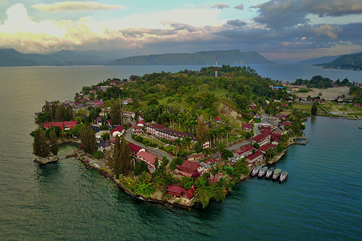
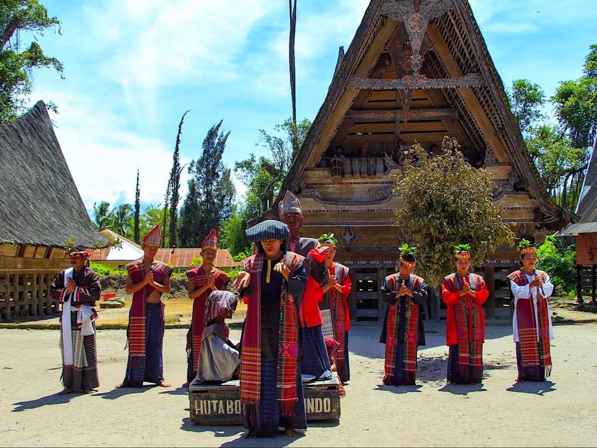
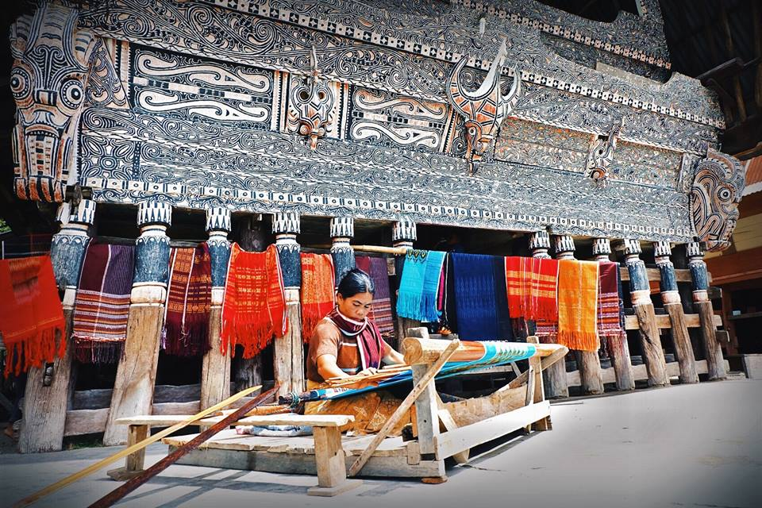
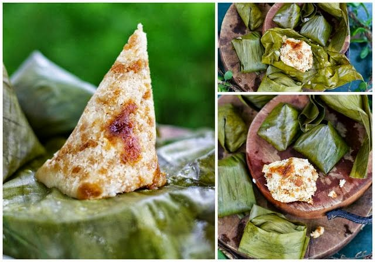

Overview
Danau Toba or Toba Lake is one of the most popular destinations in Indonesia, especially in Medan, North Sumatra. Danau Toba is the largest volcanic lake in Indonesia, even in the Southeast Asia. Which make it more special is taken from the Samosir Island, an Island that settled in the middle of the lake. Lake Toba is an area of 1,707 km², we can say that this is 1,000 km² bigger than Singapore. It formed by a gigantic volcanic eruption some 70,000 years ago, it is probably the largest resurgent caldera on Earth. Pulau Samosir or Samosir Island, The island in the middle, was joined to the caldera wall by a narrow isthmus, which was cut through to enable boats to pass; a road bridge crosses the cutting. Samosir island is the cultural centre of the Batak tribe, the indigenous from North Sumatra.
By the eruption of a super volcano (Mount Toba) was estimated to have caused mass death and extinction of several species of living creatures. The eruption of Mount Toba has led to changes in the earth's weather and the start into the ice age that affects the world civilization. Lake Toba is actually more like a sea than a lake considering its size. Therefore, the Lake placed as the largest lake in Southeast Asia and the second largest in the world after Lake Victoria in Africa. Lake Toba is also includes the deepest lake in the world, which is approximately 450 meters.
Samosir Island

Samosir Island is an unique island for it is a volcanic island that settled in the middle of Lake Toba. The altitude is 1,000 meters above sea level. Although it has becomes a tourist destination for a long time, Samosir is kind of virgin natural site. In the middle of Samosir Island, there are two more beautiful lakes named Lake Aek Sidihoni and Lake Natonang. The area around Toba has pine forests that arranged beautifuly in greenish nuance. On the outskirts of Lake Toba, there are several waterfalls which are extremely fascinating. Furthermore, you will also find a sulfur spring. At Samosir Island you can also find misty mountains, crystal clear waterfalls to swim, and farming communities. The friendliness of Batak society will captivate you because wherever you go then immediately able to find new friends.
People

The Toba people are found in Toba Samosir Regency, Humbang Hasundutan Regency, Samosir Regency, North Tapanuli Regency, part of Dairi Regency, Central Tapanuli Regency, Sibolga and its surrounding regions. The Batak Toba people speak in the Toba Batak language and are centered on Lake Toba and Samosir Island within the lake. Batak Toba people frequently build in traditional Batak architecture styles which are common on Samosir. Cultural demonstrations, performances and festivities such as Sigale Gale are often held for tourists.
Most of the people who live around Lake Toba are ethnically Bataks. Traditional Batak houses are noted for their distinctive roofs (which curve upwards at each end, as a boat's hull does) and their colorful decor.
Traditional Craft

For the Batak ethnic group of Lake Toba in North Sumatra, - as indeed with other communities in Indonesia, - their meticulously handwoven textiles, known as “ulos” are not merely made to wear as clothing, but are significant symbols of status, serve as precious heirlooms, or are ceremonial gifts during rites in human’s life cycle from births and weddings to deaths. Traditionally, weaving was the task of women only, and men were prohibited from the work, since it is believed that while weaving, women imbue the cloth with symbolic values connected with women’s role in caring for family, children and the community. Whilst men’s duty is the protection of family and village. Therefore weaving can be done only during leisure time while women tend to home and children. It is small wonder, then, that one cloth may take months to complete.
Batak textiles use mostly cotton yarn, while colors are produced by immersing the yarn in plant dye. The blue color comes from the indigo plant, red is made from sappanwood and morinda which grow abundantly in the tropics. Yellow comes from turmeric, whereas black is produced by mixing morinda with indigo, and green is a mix of indigo and turmeric. Textiles are woven on back-strap or body tension looms, where tension is created by the weight of the seated weaver who leans against the back strap. That is the reason why this type of hand-woven cloths can only be made as wide as the arms’ span of the weaver.
Culinary

Lappet is a typical snack in the Batak Land. There are two types of lapet, which are distinguished from the basic ingredients of glutinous rice or ordinary rice. It feels soft, sweet and savory in the mouth with grated coconut mixed with brown sugar. Batak people are very close to Lapet, usually served at social gathering events, traditional wedding ceremonies, breakfast guests at home. Lappet is a mandatory food that must be present at every gathering of Batak people.